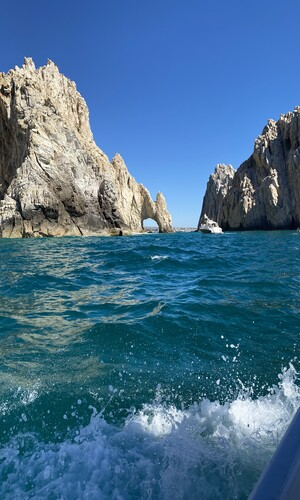
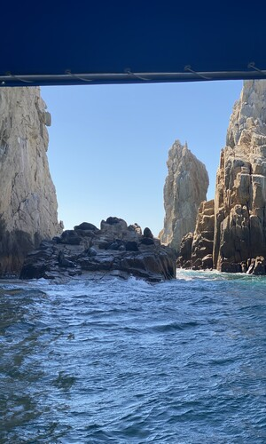
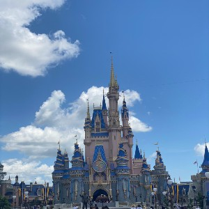
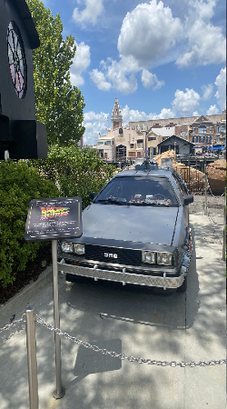
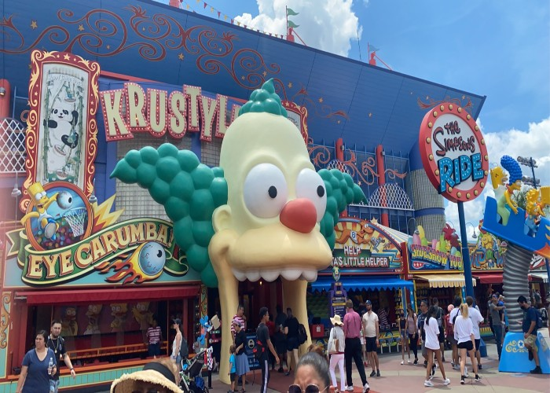
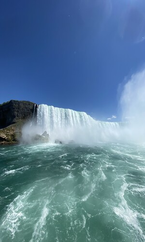

I traveled to Paris, France with my family in 2015. This was always like a dream vacation spot for us because we would always see it on tv and look at pictures, and it all looked to nice
We were there for about a week and we managed to visit some of the best tourist attractions in Paris, as well as walk throughout the streets of paris and visist some shops and boulangeries
Below are a list of places that we visisted during out stay there
I'm sure I'm forgetting some more places we visited there but those are some to name a few, it was a wonderful experience. Our first time overseas and it was an unforgettable time
Cancun has been a go to vacation destination for my family and I. We've been here multiple times
Everytime we go here it is just a blast, we usually will stay in an all inclusive hotel where food and beverages are included
This trip usually conists of going on different excursions which are kind of like amusement parks
This destination is for sure the funnest out of all the places I've been because of all the different adrenaline inducing adventures as well as the drinking age is lowered in Mexico which made it more fun
Below are some things that we did while there
Will be going back there soon, possibly this year because of how amazing the scenary is in Cancun, Mexico and because my family is from there we feel comfortable being around spanish speaking locals
This was the most recent trip. Another part of Mexico. Los Cabos is located under California.
I remember this the best as it was the most recent trip I've been to. This was more of a relaxing experiece compared to Cancun
Instead of all the themeparks and exploration, this trip consisted of site seeing, enjoying the culture there and a rented yacht that took us to see the famous strucuture in Cancun and whales
Below are just some pictures taken by me during our trip there
 Inside the USA I've been to Orlando, Florida | Las Vegas, Nevada | Niagra Falls, New York
Las Vegas was the most boring trip I've ever taken. Due to the fact that I was about 14 years old and couldn't do anything there.
So theres not much content from there apart from site seeing and exploring the strip walking
In Orlando we went to experience the Disney World Parks and Universal Studios.
We visised the following parks
Here are some pictures from my trip to Florida
  Then Niagra falls was just a weekened road trip we took to see the water falls and that was cool aswell but nothing too exciting
Here's a picture I took while we had a tour of within the waterfalls
